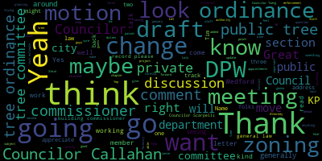
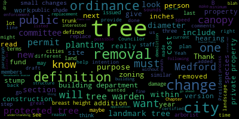
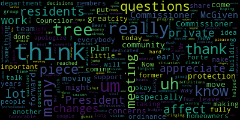
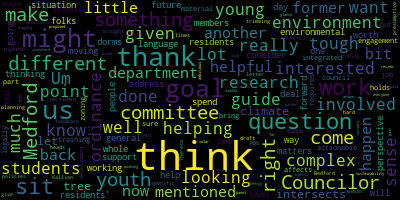

[Gerald]: Test one, two.
[Bears]: City Council and Committee of the Whole, November 20 2024 Mr please call the roll Council Callahan.
[Hurtubise]: Vice President Collins is absent. Council is always absent, Councilor Lemming. Councilor Scarpelli present. Councilor saying, President bears, present.
[Bears]: I present to absence meeting is called to order. Action Discussions item 19-070. This is by Vice President Collins and Councilor Callahan on the Tree Ordinance. We have three drafts that we've been working on for quite a while as evidenced by the 19-070. That stands for 2019. So we have a public updates to the public tree ordinance in the city ordinance is currently the discussion of the creation of a tree committee and the proposed private tree ordinance, which would be relative to zoning. We are joined today by our building commissioner, our DPW commissioner, representative of Trees Medford. And I think I'm gonna turn it over to Councilor Callahan to talk through how we're going to move through this today, Councilor Callahan. Oh, and before I said I do have to, I will read, or if trees meant for folks want to read their letter into the record. At some point later in the meeting I will read into the record, the letter from trees Medford, and the letter that we received from former counselor. Yeah, sorry. Go ahead.
[Callahan]: Thanks. So I want to give a little brief history. As President Bears mentioned, this was introduced by Councilor Knight in 2019, early in that year. It also went to the Energy and Environment Committee later that year. In 2021, it was looked at by the zoning subcommittee, and they allowed the trees Medford volunteer organization in Medford to draft and submit revised ordinance. Later in 2021 that came back. And then in 2022, that ordinance was split into three parts. And so those three parts are the ones that we'll be looking at today. One creates a tree committee for the city. One is about public shade trees. And the third one is about private trees, trees on private property. So because it's been so long and because there have been a number of changes made, our goals today are really to sort of get everyone up to speed, all the city councilors, the members of the staff, and everyone else up to speed on where these ordinances are at to figure out what our next steps are, and to basically set when is the next time that we will be discussing these ordinances in committee. So that's kind of the goals. And on that note, I would love to have, I'm very excited that we have a wonderful group of volunteers here in the city from Trees Medford who have done a lot of work on this over the last couple of years. And I know that they have a long history with this and they have offered to give a, they wrote a letter and if they wouldn't mind reading that in or I could read that for them. or President Barrett's gonna be there for them. But then after that, if we can maybe begin with the tree committee ordinance, and if they can give us a tiny introduction to the tree committee ordinance, that would be great. So I don't know if they wanna go ahead and come up to the podium.
[Bears]: Thanks, I'm happy to read the letter, unless one of you guys wanna read the letter.
[Callahan]: Go for it.
[Bears]: All right, great. And then you'll share, after that, you'll share your screen. Do you want to read the, that'd be great. Yeah. You wrote it. So I feel like you'll have a better feel on it than I do.
[Bowen]: Okay. Do I need to say who I am? Yes, please.
[Bears]: Name and address for the record, please.
[Bowen]: Amanda Bowen, 57 Madison street. Okay. Attached, please find our suggested revisions to the three tree ordinance drafts presented at the Committee of the Whole meeting on the 11th of October in 2023. We were asked to review them and provide comments and suggestions. Discussion about the topic of trees will dovetail with the citywide tree inventory anticipated to be complete in the coming month, the urban forestry master plan currently in process, as well as the ongoing urgent need to protect and expand our citywide tree canopy. Several points to highlight. We have drafted these documents in collaboration with members of the Energy and Environment Committee. We have based the documents on many existing tree preservation ordinances found in cities and towns in the area. We welcome all efforts to revise the documents as the council and others see fit. The private tree document establishes what constitutes a protected tree, as well as defining landmark trees. The public tree document is intended to modify existing ordinances. The private tree document includes guidelines for trees to be removed during construction, as well as those removals planned independent of construction. Enforcement will be the responsibility of the building department in the former case and with the forestry department or the tree committee in the latter. We intend for the tree committee to be able to help field tree permit applications, understanding that the duty suggested in the draft will be too time consuming to be handled by current forestry staff. We have left specific mitigation fees and penalties to be established in the city's regular declaration of fees and fines. For comparison, Cambridge's fee is $800 per inch with a steep discount for resident owners. Newton's is 168. per inch, Arlington's is 500 per tree, Concord's is 375 per tree, Lexington's is 200 per inch, Marblehead's is 500 per two inch or 250 per inch. We would also like to recommend that the city establishes requirements for tree contractors to be certified arborists, ISA preferred, licensed and insured similar to other contractor requirements, such as electricians and plumbers and roofers. This will help the city and residents with any tree removal projects to modify their tree canopy correctly. These arborists will understand and be able to help homeowners with the new ordinance once it is in place.
[Bears]: Thank you, Amanda. All right, I'll go to Councilor Callahan.
[Callahan]: Thanks. So if we want to go ahead and start with the tree committee ordinance, I'm happy to share my screen. What we have is a redlined version. And Councilor Beres, can you go ahead and let us know for this redlined version, what are the different colors? What are the things that are added or removed?
[Bears]: So I believe that the red indicates a comment that preexisted. And this is the blue indicates changes from the KP law draft to the draft submitted by the trees, Medford folks. So blue is new and black is something that was submitted by KP for the October 11th, 2023 meeting.
[Callahan]: So actually.
[Bears]: So the blue is all the stuff that you added.
[Callahan]: Zach just did this. He took your version, and he created a red line. Because we can't look at the.
[Bears]: We just wanted to be able to see the difference between what you guys did and the KP law. So the blue stuff is everything that you've added. And then it should also show lined removals as well.
[Callahan]: So I don't know exactly what we feel is the best way to go through this.
[Bears]: Generally, we go through section by section. You can kind of note the changes, and then we can pause for further discussion.
[Callahan]: Mm-hmm. Do people want me to read it? Should we just read it silently? Should I read it out loud for your call?
[Bears]: I think summarizing the changes is generally what I like to do, but it's however you want to handle it.
[Callahan]: Yeah. I mean, I'm only just seeing this now.
[Bears]: I'm happy to do it, too. I've done it a few times, if you want.
[Callahan]: That would be great. I'm sorry. Thank you.
[Bears]: Yeah, totally. So it looks like here we have in the purpose section, just looks like there's an edit to quality of the city's environment. And then it looks like there's a quote or kind of a section, a paragraph added. to summarize some changes under Mass General Law chapter 40A or authority provided under General Law 40A. I think we should talk, we can talk about that further, but just that might, we might want to constrain that paragraph to the private ordinance since that's the one that's going to be a zoning ordinance, but we can talk about that. And I'm interested to hear from building commissioner and the DPW commissioner. Under the appointments section, we have the committee shall consist of five Medford residents and up to 10 members total, subject to confirmation by the Council and added two youth members. It looks like a change from the last draft. One member demonstrating expertise in the fields of urban forestry or landscape design. Residency not required if requisite expertise is demonstrated. And then there's just some minor changes to the initial terms, a few more minor changes to duties, but here under section 3A, it looks like there would be a differentiation with the creation of something called the landmark tree hearing. Moving forward, it looks like some additional typographic and other language additions here in sections B, through I, I'm not seeing anything super major. Section J here. I'm just going to pull up my draft because I'm not seeing what was removed. It looks like a majority of this question under the duties has remained pretty consistent from the initial draft or from the draft from October 11, 2023 to now. And I think that generally summarizes the changes. I don't know if Amanda, if you want to talk any more about what changed between the two drafts. Okay. Yeah. So it looks like the main differences are around the composition of the trade committee and some questions around youth membership and residency. At this point, We could recognize either the DPW commissioner or the building commissioner if you have any comments on the tree committee ordinance.
[McGivern]: President Behrs. So I had a chance to review. I think it's different from what you're looking at, but I believe maybe what you did there is based off of the document that was sent. Yes, yes. Okay. So, as far as Attorney Stein's comments, I agree with the comments that she made there in the right column, and then under duties. I just had some concerns with duties that really already live in the DPW, and I don't want to create any dueling authorities. So it could just be changing language, for example, working with the tree warden in public tree hearings, including documentation of tree hearings. Really, that should be done by the DPW, specifically the tree warden, really. That would be a part of her duties to document the tree hearings. Ensure the city adheres to provisions of master That's the chapter that protects trees. That is already under the authority of the tree warden. So again, I don't want to have double authorities here, dual authorities. Duties C, I think that is an advisory capacity. But I just want to confirm that things like considerations of management of urban forestry environment as a whole, in particular neighbors, waterheads, et cetera, et cetera, et cetera, There's no authority there, it's just advisory. D, working with tree warden and local groups to develop and recommend a community forest master management plan, community forest management plan, and adoption by the city council. Again, that's just the responsibility of the DPW. Don't want to have competing authorities here. Working with the tree warden on an annual report of tree planting removal and maintenance activities. I'm okay if this committee does that on their own, but that again is a responsibility of the DPW. Jay, working with the outside groups in the DPW to develop, maintain, and use an inventory of existing public trees. and forests, including historic and notable trees, in order to improve understanding management and protection of tree resources. Again, wording, just working with the DPW. It's DPW work. I just don't want to make sure we have that clear. And that was really it. So besides that, I support this wholeheartedly, and I think the purpose is clear, to promote a diverse and healthy sustainable urban forest. that will provide for the health, general welfare and quality of life of Medford citizens and the beauty and quality of the environment. I think that's an excellent purpose.
[Bears]: Thank you, Commissioner McGivern. Yeah, and I know that Robin Stein comment on the duties at this section three will be relatively dependent on what actually happens with that public tree ordinance changes as well.
[McGivern]: Absolutely. And I think words like support and advisory are called for in a situation like this. Got it.
[Bears]: Councilor Callahan.
[Callahan]: Thank you. Yeah, my only question is, I think that the intention is to provide help so that in case, you know, given the new ordinances, there is in fact more work to do that the tree committee might be able to help with that work. So I just want to be, I want to get your input, like if the language has changed to be like, you know, when needed, help support DPW in? Like, would it be okay to include these things?
[McGivern]: Yes, I just want to make sure that there's a clear delineation as to what is DPW's work and what is the Treat Committee's work, because the purpose of the Treat Committee doesn't support some of the duties that are listed. So it's a similar comment to what Attorney Stein is saying. And that's why I think language such as advisory or a supporting role, those types of language is fine, because from what I understand or preferable, from what I understand, this isn't a committee like the Planning Board or the Zoning Board that has a defined authority that makes decisions like the Traffic Commission has a defined authority that makes decisions and those decisions are standing. Nobody else in the city has those authorities, so we just want to make sure that we're not double dipping on authorities.
[Bears]: Great, thank you. And I think as Attorney Stein noted, you know, we're subject to the Chapter 87 mass general laws around those authorities. And we can't, yeah, we just can't give away, like the Traffic Commission, for example, is actually defined by state law here, like the Medford Traffic Commission's authority. So just like tree wood. Yeah, exactly. And that's my just the kind of point I'm trying to push home. But yeah, it sounds like for the tree committee, generally, be mostly working with DPW, maybe some language tweaks would be needed around support and advice, but specifics, the public tree ordinance as we look at the amendments there is going to inform some of that for here for the tree committee as well. Excellent. All right. Thank you. So maybe we can move to, well, we can, do we have any more comments on the tree committee ordinance either in person here or on Zoom before we move on to the public? tree ordinance amendments. Councilor Sang.
[Scarpelli]: Thank you.
[Tseng]: I think something just worth thinking about going into the future is the goal with the youth members, just because working with youth can be just more complex. And so I think the question is, are we looking for young folks who are really interested in environmental matters? Are we looking for just the general youth residents' perspective? I think that will guide, that can help guide the language in this ordinance. I think one way in which that might come about where we might see a situation where we have to deal with that is if the goal is to get young people who are really interested in the environment in, it might make sense to have some tough students who are residents or tough students get involved, but given how the dorms work, they might not be, They might spend their whole day in Medford and not have a Medford address, right? And I think that's just something for us to consider moving forward. What is the goal and what support do they have in being integrated as part of the committee? Do they get training? Who's helping ease them in or tell them what their job is?
[Bears]: Thank you, Councilor Sang. And I will go to Councilor Skarpel.
[Scarpelli]: Thank you, Councilor Baez. And I think that I appreciate all the hard work everybody's done. I know this has been a long time coming, and there's just a couple of concerns that residents have reached out to me about that couldn't make it to this meeting. And I think that Commissioner McGiven helped with a lot of those questions. I think that as honorable and as lucky as we are to have a committee of dedicated members of our community, I think that really that there is some fear that having a community group making decisions that affect homeowners left some questions with our residents, but I appreciate the clear questions and definitions from Commissioner McGiven. So thank you.
[Bears]: Thank you, Councilor Scarpelli. Councilor Calderon.
[Callahan]: Yeah, I just wanted to mention the changes to the appointments and see if anyone had any comments on that. Sounds like, you know, five men for residence up to 10 total, two youth members, one who demonstrates expertise in the field of urban forestry and landscape design. Just wanted to see if there were any comments on that particular portion since we didn't really, nobody really made any comments before we move on.
[Bears]: Seeing none at this time. Great. Thanks. Thanks. All right. Let's move next to our public tree draft. If you wouldn't mind sharing that. Maybe I don't know. Maybe I can do it. Great. Do you want to go for it?
[Callahan]: Sure. All right, great. Unless, are you interested in doing an intro to this one or no? I could just do a little bit of the purpose. It does, this one is preserving, protecting public shade trees and trees otherwise located on public property. And it is different from the third one, which is trees on private property. So it looks like, let me see if I can do a little bit about the changes. Looks like there are some changes to the intent and purpose, adding something about MGL Chapter 40A. A paragraph about that and state legislature granting municipalities rights and responsibilities. It does talk about establishing a tree fund to supplement the city budget for tree maintenance, tree planting, stump removal and site preparation for tree planting. A few changes in the definitions of caliper in terms of diameters of the tree trunks measured. A few very small minor changes in construction and demolition. Then this looks like more changes to the diameter at breast height. Tree diameter in inches measured four and a half feet above the ground for multi stem trees size determined by the measure of all trunks, then adding the total diameter of largest trunk. A new definition of drip line the area directly under the tree at the outer circumference of the tree branches, where most the rainwater shed from the tree canopy drips to the ground. Then also a new definition of a landmark tree. Any healthy tree may be designated as a landmark tree if it meets one or more of the following criteria. A, a tree that is documented to be 50 years old or older. B, is 24 inches in diameter or more at breast height. C, represents a rare species. D, is associated with a historical event or person, unusual feature, or scenic enhancement. All landmark trees are protected trees, except those listed as invasive species on the Massachusetts Invasive Plants list. Then a few very small changes. A change to protective trees. The change to protective trees is accepting trees listed as invasive species on the Massachusetts Invasive Plants list. Looks like a new definition of the tree fund, an account established pursuant to this ordinance for the deposit of payments for mitigating tree removal in lieu of tree replanting. This fund may only be expended as a means of promoting a healthy tree canopy and will be applied to the cost of site preparation, tree replanting, and new tree maintenance. And a few other very small changes. The tree warden has some some new language in it, which really is defined in saying as defined in GLC 87 S2 and Medford Ordinances 1974 Chapter 26 Section 2. The tree warden is the city employee responsible for the management of city cities, public trees. Applicability these versions shall apply to the activities related to trees on public land. Changes to tree permit. In addition, if a public tree has fallen on a house resulting in damage to windows, puncturing roofs, or similar significant damage requiring immediate action, the homeowner may proceed to have the tree taken down after notifying the tree warden and no permit is necessary. Also under that section of tree permit, city tree removal and replacement, a hearing process. When the city removes a tree from the sidewalk strip, it must replace the tree within the next planting cycle unless the following procedures are followed. A, if a tree is cut down by the city and is not to be replaced in the next planting cycle, the city must hold a hearing and invite interested parties, tree groups, and residents within the city block to attend. The hearing must provide the opportunity for community members to contest the decision not to replace the tree in a timely manner. B, the decision must be announced on the city's website for one month prior to a hearing. C, if the intention is not to replace the tree at all, one month prior to the hearing, the city must inform members of each residence within the city block in writing of their intention not to replace the tree and the reason why the city seeks to reduce the tree canopy in their neighborhood. The city should plant with native trees wherever possible. Removal of a public tree must include stump removal within 60 days of the tree removal. If removal of a stump within 60 days is not possible, the city must inform residents of the date of removal. And there are more changes under tree planting. Promote an equitable and diverse urban tree canopy that provides adequate shade for all its neighborhoods. That's an addition. Looks like a lot of changes under record keeping. The city will maintain an updated inventory of all public trees, tree removals, and stumps. The tree warden shall keep a publicly available electronic record of removal requests, which shall include the species and size of trees to be removed, the reason for the removal, photographs of the trees documenting the reason for removal, the date, the contractors involved, and the name and address of the person who requests removal. The city will maintain and make publicly available in electronic form an inventory of trees that includes tree and stump removals and new planting. New section protection of landmark trees. The city shall make extra efforts to preserve landmark trees, including treating disease trees where feasible, enhancing pruning schedules and regular monitoring of the tree. A landmark tree shall not be cut down or removed without a permit. We are close to the end here under enforcement and penalties. Two sections. Section A, citizen removal of a public tree. Any person or entity damaging or removing a public tree without authority will be fined, and the fines will be deposited in the tree fund. Enforcement shall be by the tree warden or the tree warden's designee or the police. Citizens may report damage or removal of public trees to the tree warden. Section B, penalties. Any person who violates any section of this ordinance or violates any stipulation of a permit issued pursuant to this ordinance shall be fined and the fine shall consist of the cost of compensating the city for the cost of replacing the canopy that was lost. This compensation shall be calculated by measuring the canopy cover used using recent aerial photography such as Google Maps cover coverage or aerial photography, determining the number of young trees that would have the equivalent canopy coverage. The fine shall be the sum of the cost of preparing the site, planting those young trees at the current contract rate, and salaries and costs for staff time for selecting, watering, and monitoring those trees. So that is all of the additions and changes. Do we want to have staff?
[Bears]: Yeah, thank you, Councilor Callahan. Thank you. It's pretty, some pretty significant changes. So I'm wondering, Commissioner McGivern, what your thoughts are and where we might want to go from here.
[McGivern]: I don't think I, maybe the changes were made after the document that I received because the document that I have, it doesn't have anything under enforcement and penalties. Anyway, I didn't hear a lot, but I think my comments are the same anyway. My biggest thing, and I think many of the additions since I have read it contribute to this, forestry as it is now and DPW in general, it's not like we have extra resources. And so this does add on, staff time and work, it changes the way we do enforcement. I heard there at the end, we do do enforcement now, but we don't do it that way. And then the way we keep inventory. One of my major concerns here is something I want anyway, which is to maintain an inventory of trees. This ordinance would actually require us to do that. But unfortunately we have one GIS person. So, you know, one of the things that needs to be advocated for is a right sizing effort if this is to be taken seriously and actually executed seriously. I don't think one GIS person plus one tree warden plus one relatively small forestry team plus the admin of the DPW can realistically manage this increase in work. So I would recommend an FTE analysis be done on this ordinance to determine how many staff people in FTEs would need to be added to the DPW to successfully support it. So that's one of my biggest comments here. Then Funding, the fund, it seems to be established in the public tree ordinance, but is funded through the private tree ordinance. So just a question as to why that's the case. Oh, yeah, there's a reference. There's a reference in here to a non-existent plan. Yeah, the community forest master plan. It will exist in the future. It won't be called that, but there will be something there. I just don't want to hold us to something that doesn't exist. And then I would also like an opportunity to, and maybe I missed something, but to review the additional language that has been added.
[Bears]: Thank you. Thank you, Mr. Commissioner. Yeah, I think we're going to need to have this track changes draft brought to you probably to KP as well. I think there's some comments from Attorney Stein around enforcement in here already, but I'm going to go to Councilor Scarpa.
[Scarpelli]: Councilors, thank you so much. And please forgive me, I was hoping, I know that we might, I guess we had a glitch early in the meeting, so I have to pop out again in a few minutes to shut down a program. I just wanted to, if I can jump in a little bit early, just to give some comments, if that's okay, President Bez. Go ahead.
[Bears]: Yes. Councilor Scarpelli, go ahead.
[Scarpelli]: I appreciate Commissioner McGiven. I think that's kind of the questions that I had. Also with former Commissioner Forte, we really had some in-depth conversation with him and his vision with what he saw as the enforcement piece as we moved, especially to the private protection piece. And I think that in my situation, I do think that this is a lot of work and there's a lot of work that was done. There were so many changes that I hope that we do move on to another meeting with our city department heads because I think it's important that we do do a cost analysis and especially moving into the next budget season. with all the new money we have looking into bringing qualified professionals into departments that can handle such a task. I think what I'm hearing is, and I won't speak for Commissioner McGiven, but it sounds like this will really overwhelm our existing team in comparison to what they're already doing today. And then I know that I had a brief discussion with the building commission today was great and he's ready to do everything and anything possible. But as you look at the private tree protection, I think 1 of the biggest concerns that we had starting a few years ago is really. um, having government come in and tell residents what they can do on their own property. Now, and this isn't this, this doesn't affect thousands of trees. I don't think this affects many trees, but I think it does affect the quality of life and the expectations of homeowners that might want to, um, you know, you know, We have some I have to be very careful with my ethics when we talk about solar. So I'm going to leave that to the side. But there's some questions the other residents had. But I think that I think Attorney Stein did put in uh, some legal pieces when it came into the opinion of subject of challenge. Um, if we wrote in an ordinance and making some of these changes to the private, uh, tree protection plan, I think that, uh, that that might be again, that's something we talked about in the past and many, many meetings about being a slippery slope. I know that the former commissioner, um, uh, uh, Forte really had a plan in place that he was willing to share with us that is used in neighboring communities that really didn't affect most members of our community. I fully support when we talk about new development. Uh, I fully support when we have people coming in and flipping houses and taking down trees to, to, uh, find a way to mitigate that with the tree fund. I think that's a superb idea. And I think that's something that will really benefit moving forward with, um, taking care of our tree canopy. I think that's so important. But, um, again, I think there are still so many questions when it comes to the price, especially the private piece and the implementation pieces with either the DPW and their tree service team and, um, the building commissioner and his team when it comes to, um, moving forward with any of these added duties with the tree process. So again, I apologize for leaving early. I appreciate you allowing me, Council President, to share the concerns that was offered to me from some residents and historically what we've been talking about for many, many years. I do wanna see this move forward. Um, in any way, try to hold this back. I think that we have so many great ideas, and I think that, uh, our volunteers did a great job to help design and and craft an ordinance that really has some meat on it. But I think with a lot of these red line changes, um, A lot of people were confused as well in what was happening and we're a little nervous about there'll be a vote tonight, but I do think this is a good piece to, you know, my recommendation, move this to another meeting and bring all the city staff with some, after they've revisited all of these changes and put together a plan on how we could really make this work. So again, I thank everybody and I apologize for my dismissal, Mr. President.
[Bears]: Thank you, Councilor Scarbelli and appreciate your comments. I definitely think that a next step out of this meeting is going to be to refer these two relevant department heads. I think for the public tree ordinance going to the DPW, for the private tree ordinance going to both our building commissioner, as well as the, it's a zoning ordinance. So what its interfaces with the zoning updates project that we're working on, I think is going to be important. and that three committee ordinance is going to be relatively determinant based on where we land on this public ordinance.
[Scarpelli]: Okay, I thank you and I now leave the meeting so you can speed up your half and not waiting on roll calls, Mr. President. So thank you.
[Bears]: Thank you and good luck. All right, thanks buddy. Great, so With that, do we want to take a look at the private ordinance then we can look at some motions or I'll go to you Councilor Kelly at first.
[Callahan]: I just figured before we leave this one, it sounds like we want this to go to department heads for their feedback. Do we want to wait and have that feedback first before we send it to KPLI? I assume we do, because there might be some changes. Do we want to have a cost analysis done? Or should we have those? I just want to have a better sense of our plan. what the different steps are that we need. Because I think a cost analysis was mentioned. KP Law, I think, as the last step.
[Bears]: Yeah. First, Scott, do you see any engagement from your office on the public tree ordinance? OK. And Tim, do you think that you know, obviously your comments on this draft are gonna be incredibly important. Do you think that you could do some sort of kind of cost estimate as to what you think trying to fully implement this would look like? I don't know, or general estimate.
[McGivern]: Yeah, I think so. I did before on an earlier version, I think I came up with like 1.5 or something like that, FTEs to really be successful. And just to clarify, because Councilor Scarpelli paraphrased what I said, I think that I'm much more along the lines of supporting the efforts, but making it successful as possible. So I think the way it's written now, it just won't be as successful as written. That's really the point I was trying to make.
[Bears]: great thank you yeah and I really think it's important at this point to just note I think there's two tracks generally here if the public ordinance public tree ordinance and the tree committee mostly assisting dpw with public trees and that's what the dpw then you have the private tree ordinance and that's going to be a zoning related related to the planning department our zoning project and likely enforced by the building department so I just think we should try to keep those in track. So if you wanted to move on a motion here on the public to refer this public tree ordinance draft with these track changes and the tree committee ordinance with these track changes to the DPW, I think that would make sense. We can get that cost estimate, right? So I think that'll be the motion for that. Let me know what you have, Mr. Clerk. And then, yeah, I guess it makes sense. We could come back for another meeting once we've heard some from Tim and then go to send this to KP and then have a final meeting, hopefully. So there'll be two more meetings on this before report out. And this, you know, yeah. They're going to Tim. And Aggie, DPW forestry, DPW commissioner and DPW forestry. However you want to handle that is obviously it's your department.
[James]: Just me is fine.
[Bears]: Just you is fine. Great. So just the DPW commissioner.
[Hurtubise]: Councilor Callahan moved to refer the tree committee ordinance and the public tree ordinance to DPW commissioner McGibbon.
[Bears]: Yep. For comment and a cost estimate. Yep. and uh tim when do you think we could maybe do you think meeting in january might be possible i think that's fine okay yeah january maybe add to the council work to schedule a further committee of the whole in january i just don't want to let this drop for 11 months 12 months like we did last time Yeah, I'll go to them in a minute. Yes. Is there a second on that motion? Second by Councilor Sang. Yep, I'm going to go to discussion. I'm going to go to Loretta on Zoom. Loretta, I'm going to unmute you. If you could just provide your name and address for the record, please. Oh, give me one second. There you go.
[James]: Hi, Loretta James Medford Energy Environment Committee, Sherman Place. I had some questions. Can you hear me?
[Bears]: Yes, we can hear you.
[James]: Oh, good. I have some questions. I didn't quite, I understood what Tim said, but I just wanted to add some thoughts about this. When we're talking about the budgeting concerns and all the changes, the idea was to have some kind of permitting process so that we can keep track of the tree canopy and also get grants from the state to plant more trees. We can't keep track of the trees that are removed with some kind of permitting process. we have no documentation. So whatever ends up happening, that's, you know, the key is to have some kind of permitting process where if that's free or not, is, you know, something to be determined, but it will help us keep track of the inventory that we have. And the other concern, I was listening to what Tim was saying about DPW responsibilities and the committee having responsibilities. The idea was that we're all aware that, you know, with the budgeting, that there's not enough help to implement a lot of these changes. That's why the tree committee wrote and took on, you know, I shouldn't say wrote, trees meant it wrote that the tree committee would be willing to do a lot of these tasks. to help with the cost of this budget. So I just wanted to bring that up that there are many committees. Well, I should say committees and commissions within the city that have these duties and do a lot of work. And that was the idea of the tree committee that they would be able to assist to reduce the cost to DBW and to help the forestry department. So I hope you all keep that in mind. you know, people that are willing to help with these processes. And if that would be under DPW, I'm not sure, you know, the classification, but it was also to help, you know, the tree ward. Thank you, that's all I have to comment on.
[Bears]: Thank you, Loretta. Any further comment? I will go to Lois. Lois, name and address for the record, please.
[Grossman]: Lois Grossman, 33 West Street, Medford. I'm on the Energy and Environment Committee with Loretta, as well as the Tree Committee. And it seems to me that you're dividing it into public trees, certain departments were mentioned that are relevant. Private trees is gonna be more involved with zoning and so forth. But what about the tree committee itself, who was responsible for making that happen?
[Bears]: It looked to me based on the draft, and anyone can feel free to quirk me here, that the tree committee would mainly be involved in supporting efforts around the public trees. Um, and I think a lot of this has to do with the, um, enforcement authority and the ability, like the city's ability to regulate these questions coming from different parts of Massachusetts general law, um, with the public, basically general law, chapter 87, regulating public trees. And then the zoning state zoning law, chapter 40, a being what's relevant to the private, uh, property trees on private property. Um, I'm trying to look here just in the duties of the tree committee advisory matters concerning Medford's trees. So this edit would bring some, I guess, some element of the private in here. I think we just have to figure out what legal authority there is for that. But I would think that the tree committee would generally be working mainly with the forestry department and the DPW. I'm not sure if any folks want to correct me, that's my reading of the intent.
[Grossman]: But is that not the responsibility of the city council and the mayor to set up that committee?
[Bears]: Yes, the mayor would make appointments and the city council would confirm those appointments and then the committee would be staffed. the mayor would determine who would be staffing and supporting the committee's work.
[Grossman]: I would strongly urge the members of the council and those present tonight to move forward with forming the tree committee independently of the duties. Just the concept to say that there will be committee and who the members are, and the details should be worked out with the other two major portions of this legislation. I would hate to see the committee get drowned in paperwork instead of appointed. Thank you.
[Bears]: Thank you, Lois.
[McGivern]: I was just going to contribute to this part of the conversation because a similar committee would be the bicycle advisory committee. So I see this as an advisory committee. It's a promotional type committee that supports efforts that are happening in the DPW and possibly within zoning. So I think that once the ordinance is created for the committee and the appointments are made by this body and the mayor, typically these advisory type committees are run by the chairperson and almost act as an independent body, schedule themselves, create their own minutes, etc. And that would be the charge that the special employment by the city would have for them would be for them to operate themselves as a body and submit their recommendations to myself, for example, or the tree warden or the zoning officer, for example. So that's how it would probably most likely, I think, happen. Thanks.
[Bears]: Thank you, Commissioner McIvern. All right, is there any further discussion on the motion from Councilor Callahan? Seeing none, Mr. Clerk, please call the roll.
[Hurtubise]: Councilor Callahan. Vice President Collins is absent. Councilor Lozaro is absent. Councilor Lemming. Councilor Scarpelli is absent. Councilor Sang, President Behrs.
[Bears]: Yes, for the affirmative three absent, the motion passes. Maybe we can move into the private tree item. One second. There you go, Councilor Callahan.
[Callahan]: Thank you. So again, the purpose of this is to protect specified trees on private property in the City of Medford. I will just go through some of the changes that have been made since the last draft. In the intent and purpose, it does add a last sentence to the first paragraph. Medford's current tree canopy stands at 29%. Protecting and increasing trees on private property is one way to protect tree canopy. No trees shall be removed except in accordance with this ordinance. And then there's another added paragraph similar to the public tree ordinance saying state legislature has granted municipalities the right and responsibility, blah, blah, blah, and quoting MGL chapter 40A. There are some changes in the definitions. Under Caliper, again, some changes similar to those in the public tree ordinance. Definition of certified arborist, a professional arborist possessing current certification issued by the International Society of Arboriculture and or the Massachusetts Arborist Association. Definition for code enforcement officer, the building commissioner or designee. Definition for construction construction permit, a building permit issued by the building department allowing construction demolition or renovation of buildings and structures on a parcel of land. Some tiny changes to definition of construction. A new definition for critical root zone, the minimum area beneath the canopy of a tree which must be left undisturbed in order to preserve a sufficient root mass to give a tree a reasonable chance of survival. The critical root zone is represented by a concentric circle centering on the tree's trunk and extending outward towards the tree's dripline. Small changes to demolition. More changes to the diameter at breast height, which are similar to those in the public preordinance. Definition for developer, an individual or firm who purchases a property in order to improve, renovate, expand or demolish a structure with the purpose of reselling the property. Again, the definition of drip line, same as from the public preordinance. Some small changes to the definition of a hazardous tree. Definition of a landmark tree, which is the same, I believe, as from the public one. Definition of landscape design plan, a written description and scale drawing of the future site that includes the locations of plantings, structures, hardscape, green space, topography, and future canopy. A handwritten drawing is acceptable accompanied by photographs. small changes to the definition of Medford Tree Committee and person. Protected tree. Any tree on private property with a diameter at breast height of eight inches or more, or a multi-stem tree having an aggregate of 24 inches or more. Species that have a small height at maturity or are slow growing, such as flowering dogwood or American holly, with a DBH of six inches or more are eligible to be considered protected trees. Trees listed as invasive species on the Massachusetts Invasive Plants list are not considered protected trees. A few changes to the definition of replacement trees. The trees must be a minimum of three inch caliber and a minimum height of six feet. It again mentions the tree fund. It has tree protection, replacement and mitigation plan, a site plan drawn and stamped by a certified land surveyor or engineer and stamped by a certified arborist or landscape architect. It must show all protected trees as defined herein, including public shade trees near the property and must indicate which protected trees will be retained or removed and how critical root zones of each protected tree and public shade tree will be protected from damage during site work. Tree removal application process and forms required to be used by any person as defined here in seeking to remove a protected tree. The $100 fee must accompany the application. The fee will be $35 for owner occupied properties. Tree removal permit. a permit issued by the building department for removal of trees based on the appropriate application process on privately owned property. In addition to the actual cutting down of living trees, quote, removal includes any act that A, has caused a protected tree to die within the previous 12 months, or B, is likely to cause significant decline or death within a three year period. One sentence added to tree warden, the duties of the tree warden are redefined in this ordinance to include private trees. And then there are a lot of additions here under applicability. These versions shall apply to the following activities on privately owned land. Do you want me to read this whole thing? There's a lot. There's pages of
[Bowen]: pages, yeah, if you wanna go ahead and give us a little overview. We spoke to Anna yesterday about the possibility, sorry, of us doing a rethink of this document to make it simpler. We think that there are ways that we can, we've got an awful lot in here and we packed everything in that everybody suggested to us and it's too complicated to really be viable. and to enact. So we would like to sort of pull back and take a little bit longer to try and simplify this document. But you should tell us what the best way to document how things change so that you, Zach Beers, don't have to go through this like you had to last night or whenever you did it, because you shouldn't have to do that. At any rate, thank you.
[Bears]: I will, I will appreciate the credit, but I was able to use technology. It took me like 15 minutes. So yeah, 10. I did it right here before we started. So, but I appreciate that you think I did more work than I did. I think just if I could comment really quickly, you know, I don't know, I don't know exactly where all of these came from. I'm guessing it's from the ordinances that you cited in the letter, some different pieces of different pieces. I do want to go to Scott and then maybe to Tim. But my general understanding is the tree warden generally isn't involved in the private sector regulatory realm and zoning enforcement is subject of the building department and code enforcement. So my suggestion is it might be worth sitting down outside of a public meeting with the building department, maybe making a decision not to include tree warden and DPW, and maybe that's a step forward. You can come up with something there, but I do want to give Scott a chance to talk before we move forward on anything. If you have anything to say.
[Brinch]: What do you mean, Commissioner vandal I admit I'm a little bit of a disadvantage having just become online with this within the last few days and I've been trying to understand it with the red lines and the side comments and all that stuff. We're certainly willing to enforce to the best of our ability whatever does get passed. I do think I see some potential challenges in the complexion of it, some challenges in the enforcement capacities to do that. We don't have a tree warden on staff and we don't have a forestry person. We're used to dealing with trees when they've become two by fours. So this would be a new challenge for us to take on. It would probably require some education. There's a lot of reading and conversation I think still needs to be had to better understand what is expected of us and how we're going to be able to enforce this satisfactorily and understand the complexities. Because it is zoning, it does have a different enforcement process potentially has to go through. We're sort of regulated by state law in a different way. And I think there's still some work to be done and I need to understand more of it as I listen in and I have conversations with folks about it.
[Bears]: Thank you, commissioner. I appreciate it. I'm sorry for not recognizing you as commissioner. I'm going to just open it up to discussion. Members of the council about path forward here. Any thoughts? Councilor
[Callahan]: Sure. I think that at this meeting, we're really kind of getting back up to speed with like what the purpose of this is, what some of the ideas are in it. It sounds like it does need some, you know, discussion with the building department of, you know, what we can and can't do, maybe some understanding of how this can be covered by zoning and the building department, which I myself don't fully understand. And I'm curious about other cities, how they deal with this from a zoning perspective and a building department perspective to see how that is done in other cities. So I'd be interested in understanding a little bit more about that. I'm hoping that the next step might be to have a sit down. I'm happy to be involved with the building department. And I know Trees Medford has been incredibly generous with their time. And maybe we can all sit down and have an understanding, look at some other cities, discuss what's gonna be possible here in Medford as well.
[Bears]: Got it. I'm gonna go to Councilor Sanz.
[Tseng]: Thank you. Um, I think the sit down makes a lot of sense. Um, I do want to thank trees Medford for all the work that they've done on this, and I do think that they've put a lot of research into it. I think this is, you know, we're at the point where like. The council's goal is to make sure that this is something that's actionable, that holds up legally as well. And because this affects zoning, it is very much a different process, requires a different level of engagement with the material. And so I think if we can bring together us and the department heads to have a sit down before we come back to the committee with another draft. I think that would be very, very helpful. I think my question would be, we mentioned or Theresa Bedford mentioned trimming it down a little bit. Does that happen before the sit-down happens? I think that should be up to you all to work on it. And again, I thank you, Councilor Kallion, for taking this on because this is a very complex ordinance. It's very involved. I think it's hard. I think it would be too presumptive to give specific feedback on lines in here right now. Given that sit down and to do that, to do that here right now. I know that there was a letter sent in from former counselor night. that brought up some, I think, some pertinent points about how this intersects with our different climate goals and climate policies. I wonder if the PDS department planning development sustainability would be helpful in helping us gather some resources and data on that. I've done a little bit of digging into how the solar panel question and the tree question intersects. There's some from a very cursory glance, some mixed research out there. And so I think the answer is somewhere in the middle of what's been proposed by the former counselor and what is here. But I think that's very much, let's let the experts talk it out and then come back, review it, have us be another pair of eyes on this. But again, thank you for your work. Thank you. I want to thank everyone and on the Energy and Environment Committee for bringing us this far on this and in pushing us to be more ambitious as well.
[Bears]: Councilor Callahan.
[Callahan]: I just wanted to quick ask if at this stage, is there anything that we would want to ask of Innocent Associates in terms of their, you know, like, can they give us like a very general sense of like what people do in terms of zoning? And without even sending them this whole piece of paper, but maybe with the purpose of it and just say, hey, what do you recommend in terms of zoning? Or how would this piece fit into zoning? Or if we're too early for that?
[Bears]: I think it would make sense to involve the planning office and the NS Associates team who is working on the zoning update in a meeting between, I guess, you or you and Councilor Collins, Commissioner Vandewalle, and some folks from PDS and NS to kind of work through this. I know Attorney Silverstein could provide some guidance around the law without necessarily having to come up with a draft, send it to KP, get KP comments back. but I think, yeah, I would suggest that that happened as kind of just a city meeting, a mini meeting of city staff. And then when you guys have been able to iron something out that can come back to us and maybe it's part of the zoning process, or maybe it's, you know, we keep, we probably want to keep considering these three papers together, but I'm not sure how it'll interface with the work that we're doing for the zoning. There's a pretty ambitious timeline and calendar there. So, That would be my suggestion. Any further discussion? Councilor Kelly?
[Callahan]: I was just going to make a motion.
[Bears]: Go ahead.
[Callahan]: I move that Vice President Collins and I work with Therese Medford and the staff to do a next draft and update of this that we will then bring back to Council.
[Bears]: By staff, you mean the building commissioner and the planning department?
[Callahan]: Yes.
[Hurtubise]: Council, let me see if I captured this. Councilor Callahan moved that she and Vice President Collins work with Trees Medford and city staff and work on the next draft and update of this ordinance. And then to bring that draft back to an upcoming meeting of this committee. Okay.
[Callahan]: Thanks.
[Bears]: On the motion of Councilor Callahan, seconded by. Councillor Lemming. Any further discussion by members of the Council? Any further discussion by members of the public? I'm just going to add in, come to the podium, yes. Name and address for the record, please.
[Gerald]: I'm Sarah Gerald, 29 Burbank Road, Medford. So the motion you just did was for the private tree ordinance. You've made a motion for the tree committee and the private tree. And what about the public tree?
[Bears]: The first motion was for the public and the tree committee.
[Gerald]: Oh, OK. All right. Thanks.
[Bears]: Any further discussion? I have Kim on Zoom. Kim, I will recognize you. Name and address for the record, please.
[DeAndre]: Yes, Kim DeAndre, 54 Canal Street. I just wanted to put out the idea of When people meet, we might be able to invite a representative of one of our neighboring communities. I know the private tree ordinance is the most challenging of the three, but we could benefit from in-person talking with some people from these other communities. The commissioners, you know, a representative of some of the commissioners in the other communities might be very useful, just that.
[Bears]: Thank you, yeah, I appreciate that comment. And I'm seeing a nod from Councilor Callahan, maybe that you could work with Councilor Collins and the other folks to entries meant for to invite someone. Great. Awesome. On the motion of Councilor Callahan, seconded by Councilor Lemming, all those in favor? Opposed? Motion passes. Any further discussion on this topic at this time? All right, I just wanna thank everybody for getting us re-centered with staff changes and everything else and council changes. I think we're in a good place now to move ahead. We have good next steps on each of the ordinances and hopefully we can come back in January for public trees and then we'll wait to hear back on the private tree from the group that's gonna be working on it on a timeline there, making sure it fits in with the zoning project. Any motions? on the motion to adjourn by Councillor Callahan, seconded by Councillor Lemming. All those in favour? Opposed? Motion passes. Meeting is adjourned. Thank you.
|
total time: 18.69 minutes total words: 2692  |
total time: 18.28 minutes total words: 2931  |
total time: 5.8 minutes total words: 949  |
total time: 3.93 minutes total words: 601  |
{kind=link}
{kind=link}
{kind=link}
{kind=link}